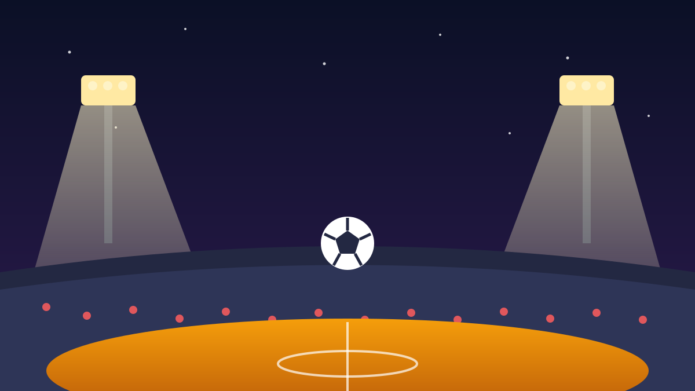

1 / 6

⚽ OLAHRAGA
The Rivalry Returns: Arsenal vs MU Malam Ini di GBK!
Thierry Henry, Rio Ferdinand, Ryan Giggs, Robert Pires — semua legenda turun ke SUGBK malam ini jam 19.00. Nostalgia era 2000-an hidup lagi! Geser →
2 / 6
🏟️
Laga persahabatan para legenda, malam ini
Laga bertajuk Champions Impact in Jakarta: The Rivalry Returns digelar di Stadion Utama Gelora Bung Karno, Sabtu (10/10/2026) pukul 19.00 WIB. Penyelenggaranya Allive Creative Indonesia.
Para legenda tiba di Jakarta sejak 8 Oktober dan menggelar jumpa pers di SUGBK pada Jumat (9/10). Ini momen langka buat fans Indonesia menyaksikan ikon Premier League era 2000-an secara langsung.
3 / 6
🔴
Kubu Arsenal: Henry dikonfirmasi!
North London Legends diperkuat Thierry Henry — top skor sepanjang masa Arsenal (228 gol) yang dikonfirmasi promotor bakal tampil. Ia ditemani Patrick Vieira, Ashley Cole, Bacary Sagna, Petr Cech, Santi Cazorla, Gilberto Silva, Robert Pires, Emmanuel Adebayor, dan William Gallas.
Henry dan kawan-kawan adalah bagian dari era The Invincibles yang menjuarai Liga Inggris 2003/2004 tanpa kalah sekalipun.
4 / 6
👹
Kubu MU: Giggs, Ferdinand, sampai Tevez
United Legends nggak kalah mewah: Ryan Giggs, Rio Ferdinand, Nemanja Vidic, Edwin van der Sar, Carlos Tevez, Dimitar Berbatov, Radamel Falcao, dan Dwight Yorke — pilar-pilar yang dulu mendefinisikan rivalitas dengan Arsenal.
Ferdinand menegaskan meski laga ini ekshibisi, kemenangan tetap jadi tujuan. Rivalitas boleh nostalgia, gengsi tetap jalan.
5 / 6
🎤
Kata mereka sebelum laga
Gilberto Silva (50) minta fans jangan menuntut performa maksimal — fisik sudah nggak muda, yang penting semua menikmati dan tidak ada yang cedera. Robert Pires (52) berterima kasih atas sambutan hangat fans Indonesia di bandara, sambil berkelakar soal macet dan motor yang banyak di Jakarta.
Pires juga mengenang duel panasnya melawan Gary Neville di Highbury dan Old Trafford. Buat dia, kunjungan kali ini adalah yang kedua ke Jakarta setelah 2013. Panitia juga menyiapkan sesi meet & greet buat penggemar.
6 / 6
🤔
Efeknya ke lo apa?
Buat generasi yang cuma nonton Henry dan Giggs lewat highlight YouTube, ini kesempatan sekali seumur hidup lihat mereka main langsung — rivalitas yang dulu bikin lo begadang nonton Liga Inggris sekarang ada di depan mata.
Yang nggak ke GBK, siap-siap FYP lo penuh cuplikan gol legenda malam ini. Pilih tim dari sekarang: North London Legends atau United Legends?